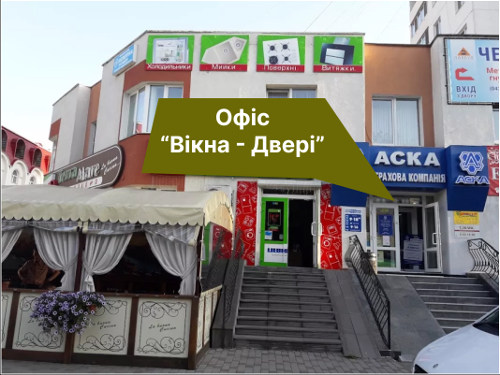
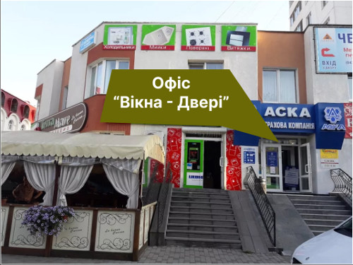

130x1407560 ₴
200x1409250 ₴
300x14018750 ₴
170x20011 025 ₴


Відкрийте вікно до комфорту з найякіснішими пластиковими вікнами у Вінниці!
Чи мрієте ви про затишок у своєму домі? Пластикові вікна - це ключ до забезпечення вашого житла неперевершеною енергоефективністю, високою звукоізоляцією та надійністю. І тепер, завдяки нам, ви можете отримати ці переваги у Вінниці!
Наша компанія займається виготовленням пластикових вікон, що відповідають найвищим стандартам якості. Ми використовуємо тільки найсучасніші матеріали, які гарантують довговічність і надійність наших вікон. Наші майстри мають багаторічний досвід у цій галузі та докладають максимум зусиль, щоб кожен елемент був виготовлений з дбайливістю та майстерністю.
Замовляючи пластикові вікна у нас, ви отримуєте не тільки гарантовану якість, але і індивідуальний підхід до вашого проекту. Ми працюємо з усіма типами віконних конструкцій, враховуючи ваші особисті вимоги та бюджет. Наші фахівці надають консультації з вибору дизайну, кольору та функціональних можливостей, щоб ваші пластикові вікна відповідали всім вашим потребам.
Ми розуміємо, що якість і сервіс є вашим пріоритетом, тому ми пропонуємо найкраще співвідношення ціни і якості. Наші конкурентні ціни зроблять процес замовлення пластикових вікон ще більш привабливим для вас.
Не чекайте довше! Відкрийте вікно до комфорту, краси і ергоефективності з найкращими пластиковими вікнами у Вінниці. Зв'яжіться з нами вже сьогодні, і ми з радістю допоможемо вам втілити ваші мрії у реальність!
Олена
"Дякую! Дуже задоволені якістю вікна. Набагато краще ніж було"
Ірина
"Прораховувала своє замовлення в кількох інших виробників пластикових вікон. У вас виявилось найдешевше."
Таня
"Замовила 2 невеликих віконця на дачу. Вдалось замовити за 12950грн. з монтажем і доставкою за місто. Виглядають просто чудово!"
Вадим
"Виготовили дві сіточки на балкон. Зробили за тиждень. Замовляв без монтажу, сам прикрутив. По якості норм."
Виготовлення замовлення 7 - 10 робочих днів, залежно від завантаженості
За додаткову плату, орієнтовно 15грн/км
Безкоштовний замір у Вінниці. Але замір оплачується клієнтом на місці, що враховується в оплату усього замовлення. Виїзд замірщика за місто оплачується замовником
Завод Veka(WHS) працює в Київській області на німецькому обладнанні та імпортній ПВХ сировині.
Згідно ДБН(державні будівельні норми) для вінницького регіону, який відповідає 2 кліматичній зоні рекомендуються 2 камерні склопакети.
Ціна доставки входить в вартість послуги монтажу. Вартість послуги монтажу складає 15% від вартості металопластикових конструкцій
Гарантійні зобов'язання стосуються цілісності конструкцій при звичайній експлуатації без зовнішніх механічних пошкоджень рами або склопакета. WHS профіль - 2 роки гарантії. Профіль VEKA - 5 років гарантії.
Гарантійні умови викладені в договорі. Гарантія не поширюється на замовлення "Без монтажу", якість перевіряється при отриманні.
Офіс "Вікна-двері": Келецька 61а, м. Вінниця, 21000
Google Maps: 49.2246, 28.4165
 

Прорахувати ваші вікна?
(068) 379-79-74